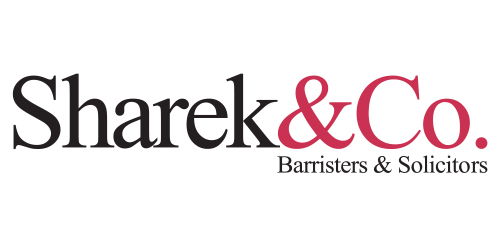

Sabon
Designer: Jan Tschichold inspired by the works of Claude Garamond
Year: 1967
Location: Germany
Purpose: Because it was a face with equal spacing in both the Roman and Italic versions, the Sabon design was initially created to create less of a workload when it came to typesetting, It was efficient because it behaved the same way across the three tangible forms of technology available at the time: single-type machine composition, and foundry type hand composition and linecasting.
Times New Roman
Designer: Stanley Morison (typographic advisor to Monotype) and Victor Lardent (Monotype designer)
Year: 1932 (first used in the Times newspaper) 1933 (available to the public)
Location: London
Purpose: Times New Roman was a custom typeface created for The Times of London newspaper when previous typefaces were deemed unsuitable by Morison and The Times executive staff. The criteria for the new typeface design was: it had to appear larger than its predecessor (unnamed), could take up no more space, should be slightly heavier, and highly legible. Times New Roman is based on the typeface, Plantin, because Morison decided it would satisfy a lot of the criteria mentioned.
Similarities
- Serif fonts
- Horizontal cross bar
- Low-moderate contrast
- Similar descender heights
Differences
- Triangular serif (TNR), Linear Serif (Sabon)
- Oblique axis (TNR), Vertical axis (Sabon)
- Small aperture (TNR), Large aperture (Sabon)
- Rounded shoulders, bowls, links, necks, etc. (TNR), slanted shoulders, bowls, links, necks, etcc. (Sabon)
- Sabon has a higher ascender
- Sabon has wider characters


Sabon

Source. Sabon in use on an album cover.

Source. Sabon in use on a physical print manual.

Source. Sabon in use on a colorful and folded pamphlet.

Source. Sabon used on a directory signage at the airport.

Source. Sabon in use in a magazine.
Source. Sabon in use on a book cover.

Source. Sabon used as the typeface of a contact lens solution bottle.
Source. Sabon used on Pinot Noir wine label.
Source. Sabon used as the Columbia sportswear company logo.

Source. Sabon used on packaging for a craft dairy company from Sweden.
Times New Roman

Source. Times New Roman in use on a poster cover design.

Source. Times New Roman in use on a news publication.

Source. Times New Roman in use as the Time Magazine Logo.
Source. Times New Roman in use as a Sharek and Co Logo.
Source. Times New Roman in use on the back cover of the book, The Bluest Eye.
Source. Times New Roman used in the Bacardi logo.
Source. Times New Roman used in the ING Banking and Financial Services logo.
Source. Times New Roman used on Beethoven album cover.
Source. Sign on the facade of the Law Faculty of the Humboldt University in Bebelplatz, Berlin.
Source. One of Coca-Cola’s last “Things go better with Coke.” ads before switching to “The real thing.” campaign.